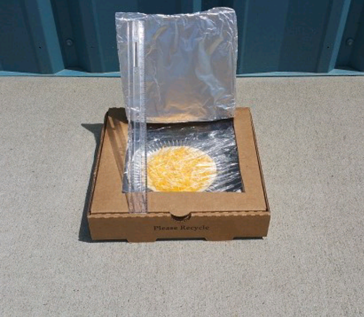
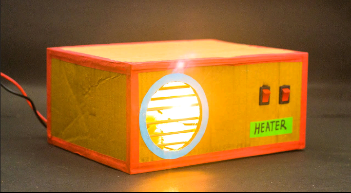

~My name is dalitso mbicholo a student at mzuzu university currently studying ICT, a programmer in making. I am a malawian young lady aged 18 currently residing in lilongwe. I am acquited with some of the programming languages like c programming and currently learning java, i also have knowledge about graphics and designing, pc repairing. I am more knowlegdeable in microsoft office and more interested in networking, i did my computer repairing at NTHA foundation where we were taught how one can maintain he's/her computer, we also learnt some basic graphics and designing and how to play well with the adobe suit.
~I am one of the founders and a COO of a company called smart solution, it is an electronics company where we offer the following services: CCTV installation, nertworking,graphic and web designing, electriv fencing, IP PABX system,gate or garage automation and video conferencing solutions.This is why in my own free time i am a fleerance designer and a bussiness woman in a sense that i sell limited edition clothes

FEATURED PROJECTS
~Below are some projects of which i featured in.
~In 2020 when i was in form 3 i took part in a school project where we created a solar cooker. It used solar energy to heat up the oven and therefore creatin necessary amount of temperature to heat up the food.
~In 2022 during my form 4 we had a competition we other secondary schools, i also took part in a project where we created a heater we using some basic handmade materials to come up with the project.
~With the knowledge i have on designing and programming i can say that i have the following skills.